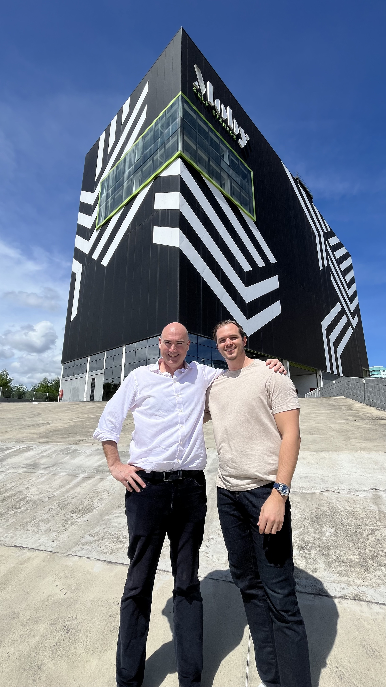
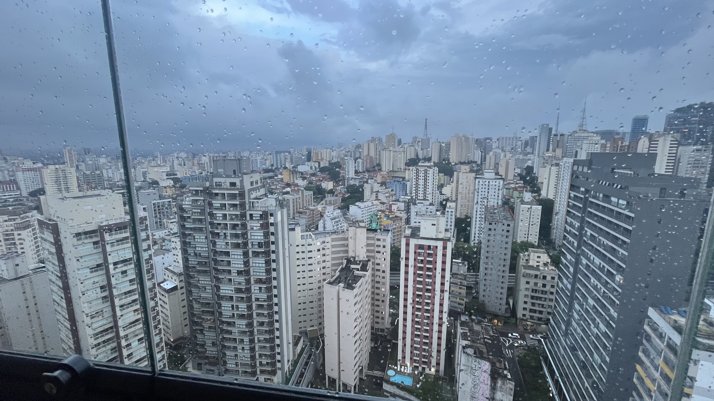
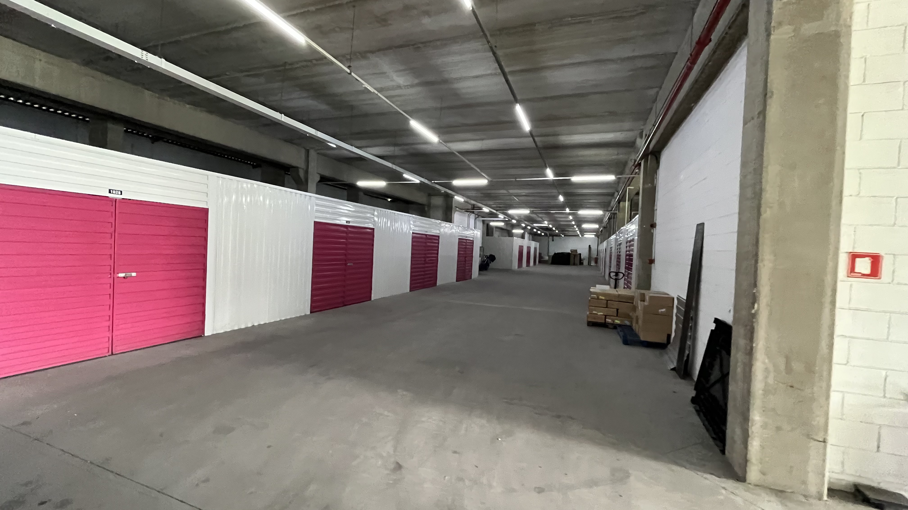
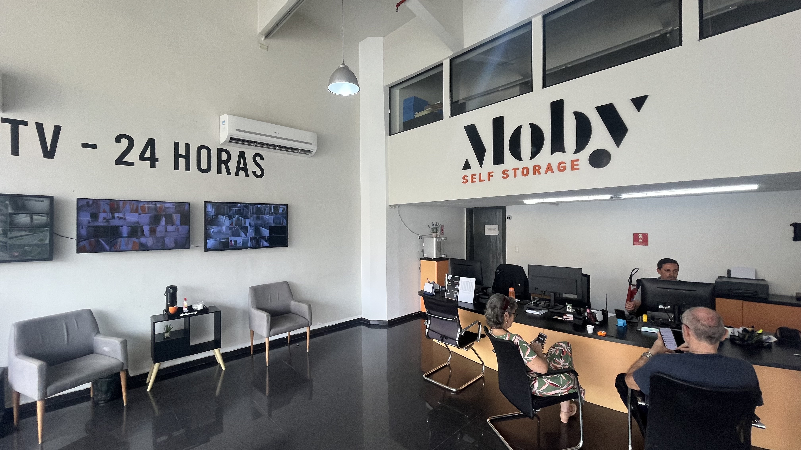
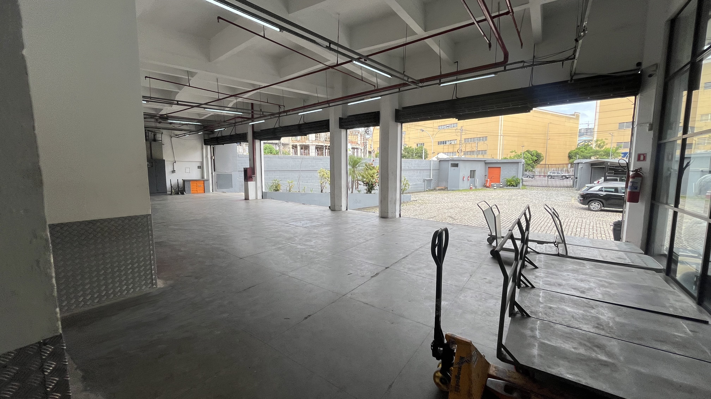
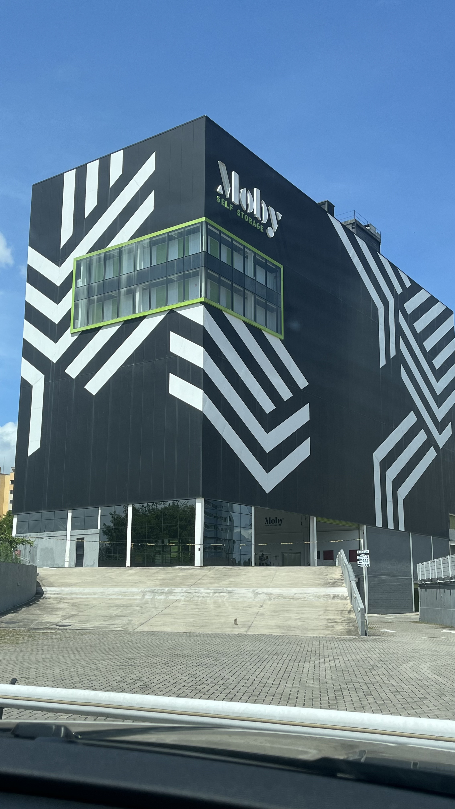
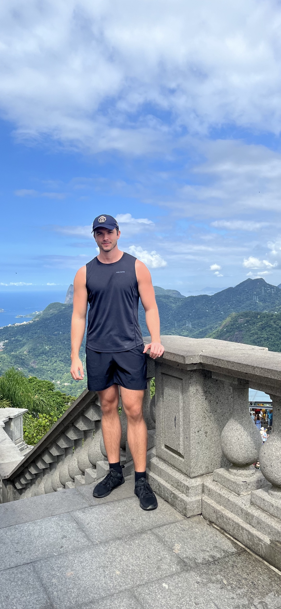
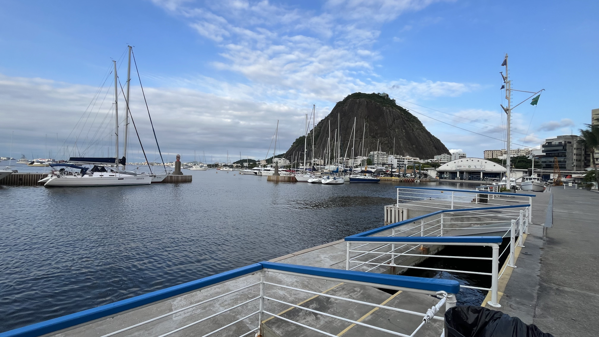
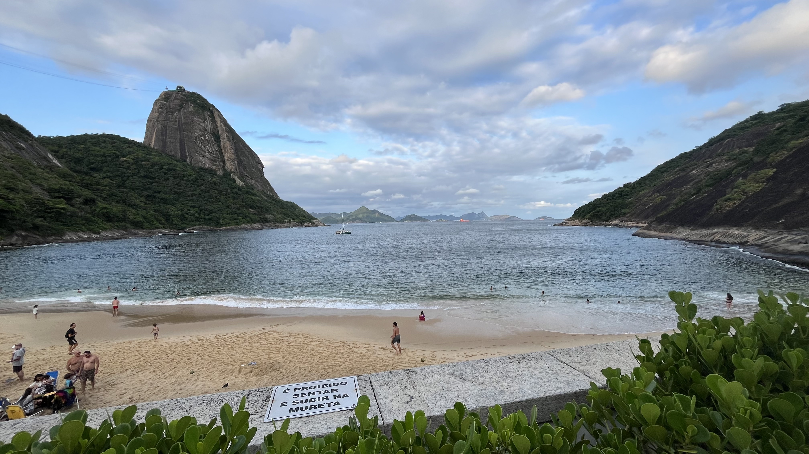
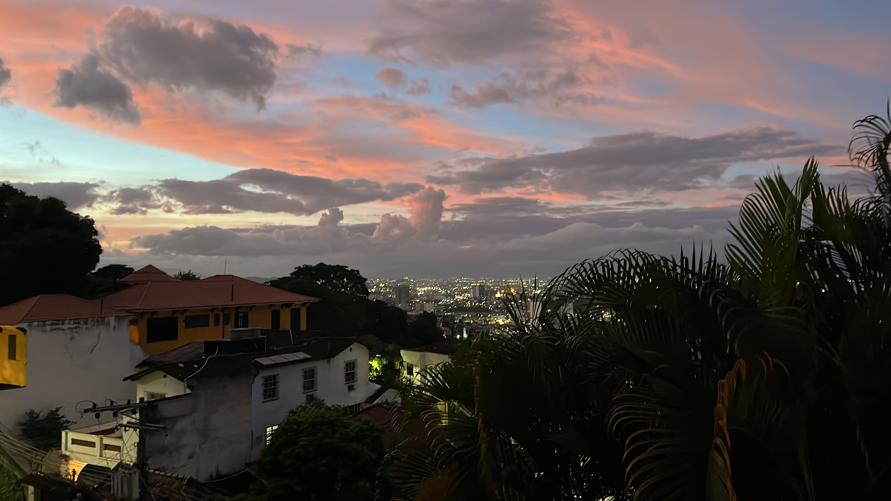

Brazil has to be one of my favorite countries.
I visited in March 2026 — the purpose of my trip was primarily for business but I was able to explore Rio de Janeiro and São Paulo. (I wish I stayed longer!)

São Paulo
My first stop was in São Paulo where I met with the owners of the Moby Self Storage portfolio. What surprised me about São Paulo is the density of the infrastructure and how many residential & office towers are there. It reminded me of the density you would find in a city like Bangkok!

The first property I visited was Vila Leopoldina which is located on a busy road just in front of the facility. The unique colors of the property make it hard to miss! Additionally the large drive-up units for e-commerce/contractors and other businesses to utilize is a feature I've not seen in many storage properties.



Next, I visited a vacant lot that is approved for self storage development. The concept would be constructing a vertical storage facility with as many as 9 floors + retail tenants on the first to further anchor interest to the property.
Although I only spent about 72 hours in SP — I will be going back at some point to explore the city.

Rio de Janeiro
The remainder of my trip was staying in Copacabana — just a few minutes walking to the beach! Personally, I loved the vibe here! You'll find people constantly running, walking, riding bikes, playing volleyball, and enjoying the beach. It really doesn't matter the time of the day either.

The attractions here would be Christ The Redeemer & Sugarloaf Mountain. I only had time to see CTR but it was an amazing experience! (Although very crowded). The views from this point were absolutely incredible. Although I didn't make it to Sugarloaf, there is a beach near the mountain that you can relax and it makes for an incredible view. You can take cable cars up to the view points (they also have a DJ that performs there too).



Aside from the attractions, I toured the remaining self storage properties scattered in Rio. One area that really caught my attention was Barra da Tijuca (or "Barra"). This is a prime area where the wealthier class in Rio reside. What makes it unique is a long stretch of road that extends through the city and on either side you'll find retail, shops, markets, malls and everything else you may need + the beach on the side! (It wasn't crowded either).

The other stops in Rio consisted of Porto Maravilha & São Cristóvão.
Porto Maravilha is experiencing a massive shift in infrastructure redevelopment and additional residential towers constructed by Curry. This location is adjacent to the Port and has a long runway for growth.
São Cristóvão is expediting some redevelopment in the area as well.
This trip left an impression on me and I will definitely be returning to Brazil very soon!